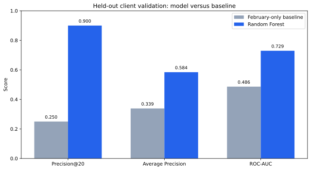
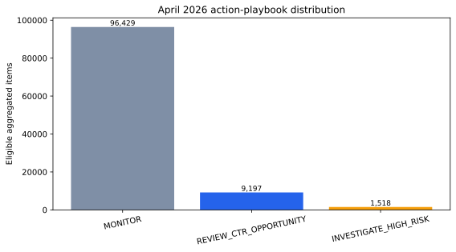

A content-review decision, not a ranking-algorithm claim
Content teams have limited time to review titles, snippets, and pages. The practical FlyRank case-study question is therefore: which already-visible pseudonymized content items should receive human CTR review first?
The decision supported here is prioritization. An item is not “bad” merely because its CTR is low: expected click-through rate depends strongly on its search-position tier. This work compares each item with an observed benchmark for comparable positions and ranks the largest observed gaps for human review.
Public-safe warehouse scope
The analysis streams aggregate daily records from FlyRank’s internship warehouse table, fact_content_daily_performance, without downloading the full release. Pseudonymized identifiers are used only for grouping and validation, never as model features.
| Window | Purpose | Daily records | Pseudonymized clients | Pseudonymized content items |
|---|---|---|---|---|
| February 2026 | Predictor features | 7,355,108 | 54 | 321,546 |
| March 2026 | Position-adjusted CTR proxy label | 9,841,378 | 55 | 331,437 |
| April 2026 | Action-playbook scoring | 10,424,730 | 61 | 362,172 |
Raw URLs, titles, queries, client names, credentials, row-level recommendations, March outcome fields, and product/action flags were excluded from the published work. Only aggregate public-safe statistics and charts are shown.
February inputs, March proxy label, grouped validation
The model uses only February aggregate inputs available before the March outcome window: impressions, average position, scroll events, social sessions, observed-day coverage, GA4 availability, and a February position bucket. Missing numeric values use median imputation with missingness indicators; the position bucket uses categorical imputation and one-hot encoding.
The transparent baseline ranks February items in positions 4–20 by February impression volume. The Random Forest and baseline are compared on the same grouped pseudonymized-client holdout: 73,481 eligible February-to-March items, 12 held-out clients, and zero client overlap between training and validation.
Leakage checks excluded identifiers, March outcome fields, future-window fields, product flags, action labels, and target-derived columns from the feature vector. A deliberate copied-label test reached perfect performance and was removed; the final reported result uses only the honest feature vector.
The model ranks the proxy label more effectively than the heuristic
| Held-out metric | February-only baseline | Random Forest |
|---|---|---|
| Precision@20 | 0.250 | 0.900 |
| Average Precision | 0.339 | 0.584 |
| ROC-AUC | 0.486 | 0.730 |

What this work cannot claim
- Observational, not causal: the model ranks observed historical patterns; it does not show that an edit will cause more clicks.
- Proxy outcome: below-benchmark CTR within a comparable position bucket is a prioritization proxy, not a direct measure of business impact or user satisfaction.
- Outcome-window selection: March availability and the eligibility rule are outcome-window choices and must be disclosed when interpreting the result.
- Coverage: performance may differ for other clients, periods, query mixes, seasonal conditions, and search-result layouts.
- Human review required: no site, title, metadata, URL, publishing, or deletion change is automated.
April action playbook
The February-to-March model was applied to eligible aggregated April 2026 items. Its output is a decision-support label rather than an instruction to change a page automatically.
| Action label | April aggregate items | Human action |
|---|---|---|
| REVIEW_CTR_OPPORTUNITY | 9,197 | Review snippet, intent, and the observed CTR opportunity before proposing a change. |
| INVESTIGATE_HIGH_RISK | 1,518 | Diagnose further before deciding whether intervention is appropriate. |
| MONITOR | 96,429 | Retain for monitoring; no current intervention is prioritized. |

How to inspect or rerun the work
The full analysis, public-safe aggregate artifacts, and notebooks are available in the public repository.
- Repository
- Capstone notebook
- Model comparison notebook
- Validation and claim audit
- April action playbook
The workflow uses fixed random seeds and grouped pseudonymized-client validation. This page intentionally contains no raw or row-level dataset export.